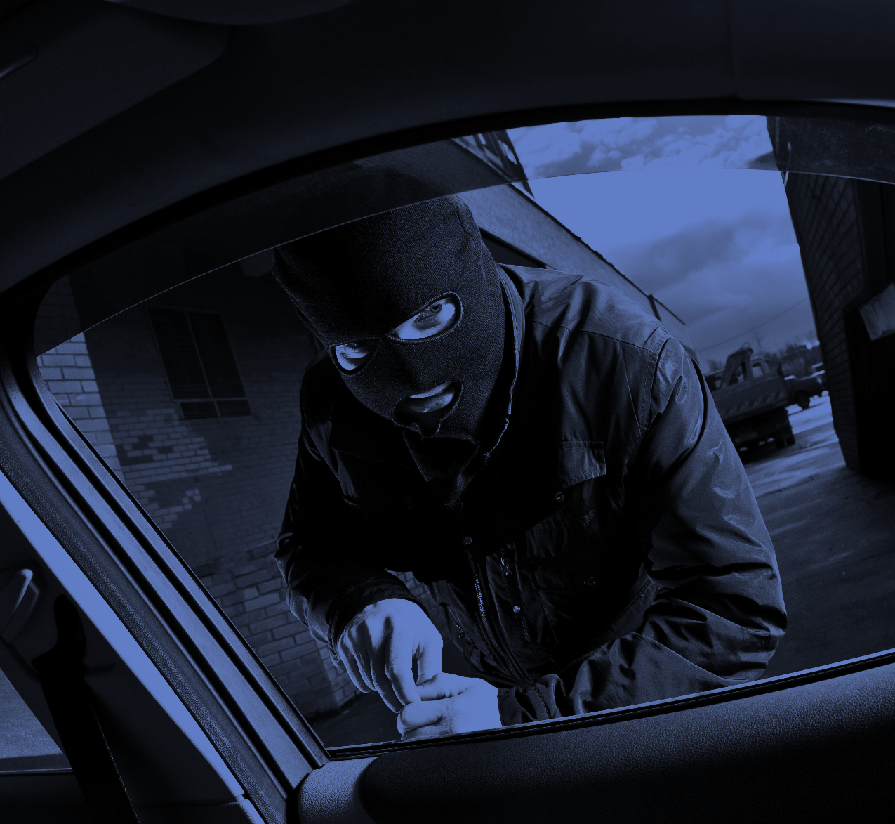
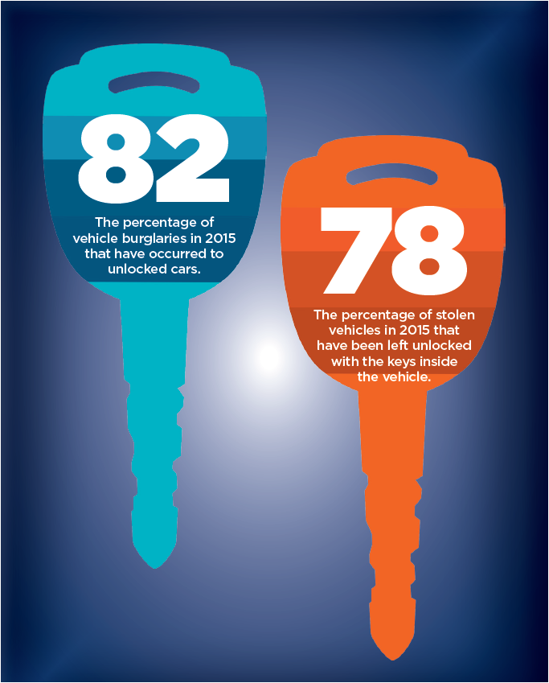
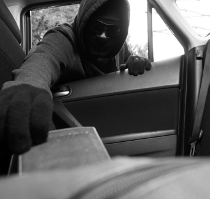

Clearwater, FL Police Department
Home MenuBurglary Project: RID

Introduction and Discussion
Undoubtedly, the most significant crime in the City of Clearwater is burglary, whether these crimes involve vehicles, residential properties or commercial businesses.
In 2014 alone, there were 573 residential burglaries, 182 commercial burglaries and 818 vehicle burglaries investigated by the Clearwater Police Department. Though the burglary rate was significant, the arrests that followed these cases were equally concerning:
- Of the 573 residential burglaries, there were 86 arrests – a closure rate of approximately 15 percent.
- Of the 182 commercial burglaries, there were 30 arrests – a closure rate of approximately 16 percent.
- Of the 818 vehicle burglaries, there were 98 arrests – a closure rate of approximately 12 percent.
The challenge of preventing residential, commercial and vehicle burglaries, as well as the difficulty in identifying burglary offenders, is evident through the roughly consistent rate of burglaries, as well as burglary arrests, over the past five years by the Clearwater Police Department. It is a problem that will require extensive work within and outside the police department—from changing the way we investigate these crimes to how the public can safeguard themselves against them.

The Clearwater Police Department is committed to reducing the amount of criminal incidents of burglary occurring within the city of Clearwater.
The number of vehicle burglaries – as well as the successful resolution of these investigations – is further complicated by the significant rate of incidents in which burglarized vehicles are left unlocked by their owner or operator. Illustrative of this point is that in 2014, 70 percent of vehicle burglaries occurred to cars in which the victim failed to lock the vehicle or secure the property within the vehicle. To date in 2015, the unlocked vehicle burglary rate is 82 percent. Failure to lock vehicles during incidents of vehicle burglary also significantly influences the department’s automobile theft rate; to date in 2015, approximately 78 percent of vehicles stolen within the city of Clearwater occurred in circumstances where the victim left the vehicle keys within their unsecured or unlocked car.
Burglaries are a legitimate concern because of their frequency and impact on patrol operations, as well as investigative resources. By way of example, national research indicates that the average cost associated with a burglary investigation is approximately $5,000 – therefore; these crimes have a significant impact on the resources of this agency. In terms of burglary investigations in 2014 alone, this translates into roughly $7,865,000 of department resources dedicated solely to burglary investigations.
Burglary continues to be the leading Type 1 UCR crime nationwide and greatly contributes to a sense of dread or fear in our community, which impacts citizens’ quality of life. As a result, the Clearwater Police Department is committed to reducing the amount of criminal incidents of burglary occurring within the city of Clearwater, as well as simultaneously increasing the arrest rate of these crimes, through this new initiative.
Operational Plan

To reduce the concerns of all forms of burglary – residential, commercial, and vehicle– in the city of Clearwater, the police department has created Burglary Project: R.I.D. The aim of Burglary Project: R.I.D. is to develop a department-wide approach to:
- Reduce the opportunity for burglary within the city of Clearwater
- Increase awareness of burglary, as well as prevention efforts, within our community
- Develop suspects and arrest burglary offenders
This initiative, focusing on the three core areas listed above, will allow the Clearwater Police Department to better coordinate resources in an effort to have a significant impact on both the prevention and resolution of residential, commercial and vehicle burglaries.
Addressing burglaries within the city of Clearwater is not the responsibility of one person, unit or division.
Patrol Division
Patrol Teams
The Patrol Division's response to burglaries in the city of Clearwater is paramount to our success. Patrol Division officers will be aware of burglary patterns within their respective zones, focusing on directed patrols, zone saturation and completing quality field interrogation reports of suspicious individuals and likely burglary offenders. Officers will utilize the CompStat Mapping and/or SafeCOP software to obtain real-time information on burglaries including Modus Operandi (M.O.) and descriptions of suspects. Quality and frequent field interrogation reports are an essential tool in identifying offenders, as well as preventing criminal activity through high visibility patrol. Officers will be mindful of burglary offenses during citizen contacts and field interviews, remembering to inquire of prior burglary history/offenses and appropriately documenting this information in the offense, incident, and field interrogation reports. Officers may also distribute information to the Crime Analysis Unit regarding intelligence information or other information not documented in an offense, incident, or field interrogation report through the CompStat Information Submission tab in Tri-Tech. Officers will be provided with the availability of undercover vehicles to allow for proactive surveillance details. Patrol supervisors are expected to review alerts on burglary patterns and direct their patrol resources, including uniformed and plainclothes personnel, accordingly.
Because burglary investigations are inherently difficult to resolve, due to the frequent lack of physical evidence and other factors, the department recognizes the importance of conducting detailed on-scene burglary investigations as a means to properly identify burglary suspects. The maximum amount of physical evidence collected can help identify offenders and connect them to additional crimes. Therefore, crime scene processing of all burglary scenes is essential. Patrol supervisors shall ensure that all burglary scenes are appropriately processed for forensic evidence to include DNA processing when appropriate. Officers should actively encourage victims to process burglary scenes as a means of obtaining a fingerprint, footprint, tool marks, DNA or other physical evidence from the scene.
The maximum amount of physical evidence collected can help identify offenders and connect them to additional crimes.
Additionally, patrol officers should consider, and attempt to accomplish, the following tactics in all burglary investigations:
- Neighborhood canvass
- Tracking GPS-enabled devices such as smartphones, iPods, iPads and computers
- Having victims contact their bank or credit card company to determine attempted or actual usage of their debit or credit cards – including the location where the credit card was used or attempted to be used, the date/time of the use, and amount of any transactions or attempted transactions
- Following up on stolen credit card usage, including obtaining video surveillance where possible
Anti-Crime Teams
Officers will closely work with the Burglary Unit, assisting with proactive surveillance details. Officers will be aware of the prolific burglary offenders and make regular contact with these offenders when they are observed in public. Officers will monitor alerts relating to burglary patterns and conduct directed patrols accordingly.
Traffic Enforcement Team
All officers, including those assigned to the Traffic Enforcement Team, will recognize the connection between traffic enforcement and crime reduction and focus their traffic enforcement to areas of known burglary patterns and be alert to the presence of stolen property or burglary tools during vehicle stops and searches. Officers will remain alert to contacts with known burglars, burglary suspects, or other suspicious individuals, in the course of their enforcement duties and will forward information on these contacts to the Crime Analysis Unit and the Burglary Unit.
Downtown Bicycle Team
Officers will be alert to subjects who have known criminal histories for burglary when making their contacts. Officers will focus their bicycle-directed patrols to areas where burglaries are occurring.
Community Liaison Team
The department must improve its efforts to educate community members, businesses and visitors on mechanisms to reduce victimization. The Community Liaison Team members are central to this effort, but all employees must be alert to opportunities to educate the public, whether these opportunities occur during a call for service, citizen contact, Park, Walk and Talk, or other incidents.
Community Liaison officers will attend community meetings and events, providing citizens with crime prevention tips and information on burglary crime trends in their respective areas. As unlocked vehicle burglary and theft of automobiles in which the vehicles keys were left inside by their owners is a significant concern, officers will use a variety of mechanisms to provide citizens with crime prevention material which emphasizes the need to properly secure personal property consistent with the department’s “Lock, Take, Secure” campaign.
Liaison officers will conduct Park, Walk and Talks in areas where pattern burglaries are occurring, informing citizens of these issues and providing crime prevention information. When burglary patterns are occurring in apartment complexes, officers will make contact with management to make them aware of the patterns and utilize this as an avenue to provide information to all tenants.
Community Liaison Team Members may also
utilize the following to educate the public and
reduce the opportunity for burglary offenses:
- Conduct Crime Prevention Through Environmental Design (CPTED) assessments to reduce victimization;
- Promote “Operation: Identification” as a means for citizens to register the serial numbers and photographs of items of property, in the event these items are stolen. This program is available online, through paper form, or through the department’s Smartphone applications;
- Personnel are encouraged to develop other creative means to educate the community about this ongoing concern.
Evidence-Based Burglary Offender Profiles Partnership
The department will expand training in the application of the “Evidence-Based Burglary Offender Profiles Partnership” initiative, which was initially piloted in District Three. Patrol officers will continue to profile burglaries utilizing Dr. Fox’s assessment program, and in partnership with the University of South Florida. As such, patrol officers will categorize structure burglaries as organized, disorganized, opportunistic, or interpersonal. This will allow burglary detectives to evaluate cases assigned to them in an effort to link cases with offenders who commit similar crimes.
Technology
The Clearwater Police Department will improve upon its current technology to assist in this initiative. Some of the technology utilized by the Clearwater Police Department will include:
- Operation: Identification
- Coplogic – Online Crime Reporting
- TIP411 – Anonymous Tip Submission
- Crime Stoppers
- Crime Prevention Kiosk(s)
- Mobile Surveillance Cameras
- GPS Tracking Devices
- RAPID Pawn Database
- “SafeCOP” Software (Patrol and CID)
- Bair Analytics Software (CID – Patrol Commanders)
- Raids Online – online crime mapping
These new technologies will allow members of the Clearwater Police Department to better educate citizens on crime-prevention methods, provide public awareness of burglary crime trends in their respective areas, allow citizens to provide tips on burglary-related crimes, provide citizens with a mechanism to record serial numbers on valuable property items, and supplement burglary reports online with updated information.
One of the key elements of improvement will be a Clearwater Police Department smartphone application, which will provide citizens with several pieces of information to include crime prevention information, crime patterns and information on known subjects wanted for property-related crimes.
The Clearwater Police Department will utilize TIP411 and Crime Stoppers as an outlet for receiving anonymous tips related to property crimes. The Clearwater Police department will utilize its website, social media and “RAIDS Online” to provide citizens with real-time information relating to crime patterns in their neighborhood.
Citizens will be able to record serial numbers utilizing the “Operation Identification” program (either through the department’s website or through the department’s smartphone application), along with supplementing their burglary reports with updated information utilizing the Coplogic program. The Clearwater Police Department will also install an interactive kiosk at Westfield Countryside Mall, which will provide citizens with information on crime prevention information.
The RAPID database will allow detectives to search stolen property in pawnshops statewide.
“SafeCOP” will allow patrol officers to input information relating to burglaries in the software program, so that all members of the agency are immediately aware of the details surrounding the crime including the Modus Operandi (M.O.) and any description of the suspects. The program will also allow officers and detectives to share relevant information through a blogging format. Bair Analytical software (ATAC Raids – ATAC Workstation) will allow the Crime Analysis Unit to search patterns quickly and efficiently, providing patrol officers, investigators and command staff with accurate, actionable and timely information.
Criminal Investigations Division
Crime Analysis Unit
CID will seek to align resources in the pursuit of burglary investigations, converting a police information technician position to a crime analyst position. This will increase the Crime Analyst Unit to three analysts, assigning one analyst directly to the Burglary Unit. This crime analyst will focus directly on burglary trends, along with the data mining of information that would further the success of identifying potential offenders responsible for these crimes.
The analyst, along with other members of CAU, will be responsible for tracking crime trends and series by time of day, date, day of week, location, and M.O. and will make forecasts where possible in an effort to effectively and efficiently direct patrol and investigative resources. The Crime Analysis Unit will track suspects arrested for burglary and attempt to match previous offenders to newly reported M.O.s and new arrested offenders to previous M.O.s. in order to assist the Burglary Unit. The Crime Analysis Unit will identify well-defined patterns and assist in guiding detectives on surveillance and proactive details. The Crime Analysis Unit will review the offender profile information documented y patrol officers in an effort to quickly identify related burglary investigations. The Crime Analysis Unit will also maintain a list of prolific burglary offenders, which will be provided to detectives within the Burglary Unit, along with the Patrol Division commanders.
In addition to attempting to quickly identify emerging patterns and trends relating to burglary investigations, the Report Review Team will ensure that patrol officers are conducting thorough and complete investigations and documenting these investigations in well-written reports that can be utilized to support successful prosecutions.
Burglary Unit
The Burglary Unit is a critical component of the department’s approach to reducing burglaries within the city of Clearwater, as well as quickly identifying and arresting burglary offenders. To increase the overall success of the department’s approach, the Criminal Investigations Division will realign existing resources, immediately adding one additional detective to the Burglary Unit. The unit will consist of six burglary detectives. providing each detective with a smaller area of responsibility. This will allow detectives to increase the thoroughness of their investigations and provide them additional time to take a proactive approach to existing, as well as emerging, burglary patterns.
Each detective will be responsible for conducting, at a minimum, one pawnshop inspection monthly, as well as attending one community meeting, within their assigned area, to provide education to the public on burglaries occurring within the community, as well as provide educational information to prevent victimization. Detectives will utilize this time to inform the public on the CPD smartphone application, along with the CPD website, where they can receive information on ways to log serial numbers of valuable property items and provide tips on suspicious subjects or potential burglary offenders.
The Burglary Unit supervisor is responsible for ensuring that all investigative leads have been exhausted, prior to the investigation being “inactivated” or otherwise “closed.”
The Criminal Investigations Division will revise and formalize case assignment protocols, to ensure investigations receive the appropriate follow-up and assessment by a detective. As part of this formalization, any investigation with existing follow–up information will be assigned to detectives as an “active” case. As part of establishing formalized case assignment protocols, any investigation which documents the existence of the below information will necessitate the investigation being assigned as “active” to the zone detective:
The Burglary Unit supervisor is responsible for ensuring that all investigative leads have been exhausted, prior to the investigation being “inactivated” or otherwise “closed."
- Presence of video surveillance images;
- Indication that credit cards and/or debit cards were stolen;
- DNA evidence is present at the scene (for example: blood evidence is left behind, swabbings from a burglary tool left at the scene were collected, or the burglary tool itself was collected);
- Latent prints are collected from the scene;
- The investigation is part of an emerging or existing burglary pattern or trend.
A “burglary checklist” has been created so that each case is thoroughly investigated, and all feasible leads pursued, prior to the case being inactivated. Detectives will be responsible for making regular contact with the prolific burglary offenders residing within their assigned zone. The Burglary Unit supervisor is responsible for ensuring that all investigative leads have been exhausted, prior to the investigation being "inactivated” or otherwise “closed.” The Burglary Unit will, when appropriate, conduct proactive investigations – aggressively using GPS devices or other department resources to target burglary offenders who may be operating in well-identified geographic areas.
Economic Crimes Unit
Detectives within the unit will work closely with detectives of the Burglary Unit on the investigation of credit cards and checks that have been stolen in burglaries and subsequently used in frauds or forgeries. They will also work with burglary detectives in the investigation of stolen vehicles involved in the commission of burglaries. Detectives within this unit will utilize the CPD Debrief Form and ask subjects involved in their cases about any knowledge of burglary-related crimes. This information will be provided to the Crime Analysis Unit, as well as the Burglary Unit supervisor.
Homicide, Robbery, and CACF Units
Detectives within these units will utilize the CPD Debrief Form and interview subjects involved in their cases about any knowledge of burglary-related crimes. This information will be provided to the Crime Analysis Unit. Detectives within the Homicide and Robbery Units will work closely with the Burglary Unit on the investigation of firearms stolen in burglaries and subsequently used in robberies or shootings.
Intelligence Unit
Detectives within this unit will investigate tips received from various sources to develop possible suspects in burglary cases. Detectives will utilize the CPD Debrief Form and ask subjects involved in their cases about any knowledge of burglary-related crimes. This information will be provided to the Crime Analysis Unit. The gang detective will closely monitor gang members suspected of committing burglaries. If a gang member is charged with the crime of burglary, the assigned gang detective will work closely with burglary detectives to assure that the investigation is scheduled on the gang calendar at the State Attorney’s Office. The assigned technical detective will assist the Burglary Unit with proactive surveillance details and assist with gathering surveillance footage at crimes scenes, along with the deployment of mobile surveillance cameras and GPS devices.
Vice and Narcotics Unit
Detectives within this unit will cultivate informants who can provide information about burglaries as well as illegal drug activity. Detectives will specifically target drug dealers who have criminal histories involving prior arrests for burglary or drug dealers that are suspected of committing burglary crimes. Detectives will utilize the CPD Debrief Form and ask subjects involved in their cases about any knowledge of burglary-related crimes. This information will be provided to the Crime Analysis Unit. Detectives from these units will arrange for burglary detectives to accompany them on search warrants to look for stolen property.
Support Services Division
Training Unit
Personnel will identify advanced courses in burglary investigation for officers and detectives and will include burglary investigations as a topic for recruit training, along with in-service training.
CPD Forensics Unit
Training will be provided to the crime scene technicians to increase the thoroughness of processing at burglary scenes to include the collection of items used to force entry (rocks, bricks, etc.) and obtaining DNA swabs from items touched by suspects.
Partnership
Department of Juvenile Justice
The Clearwater Police Department will work closely with the Department of Juvenile Justice on known burglary, gang and prolific offenders with community restrictions. In partnership with Department of Juvenile Justice probation officers, detectives will continuously check on known burglary offenders and/or prolific offenders who are on electronic monitoring, house arrest, curfew status or additional community restrictions. Detectives will communicate with Department of Juvenile Justice probation officers, keeping them informed of violations and attending suspects’ court appearances when necessary.
Pinellas/Pasco State Attorney’s Office
The Clearwater Police Department will work closely with the Pinellas/Pasco State Attorney’s Office on prolific offenders responsible for burglary offenses or subjects suspected of committing a series of burglaries. Detectives will make sure that Pinellas/Pasco State Attorney “Invests” on known gang offenders are set on the gang calendar.
Department Goals
The goal of the Clearwater Police Department is to reduce the number of reported commercial, residential and vehicle burglaries. In addition, the Clearwater Police Department aims to increase the number of burglary arrests and increase the UCR clearance rate for burglaries.
Additional benefits of this initiative will include enhanced communication, coordination and cooperation throughout the Clearwater Police Department, and with our crucial partners in this plan. To achieve the full potential of this initiative, each organizational component, and each employee, must commit themselves to make their individual contributions.
The measurements of this goal will be made by comparison of yearly statistics of reported commercial, residential and vehicle burglaries, and the number of arrests made for commercial, residential and vehicle burglaries.
Working collaboratively, and with our key partners, the Clearwater Police Department can achieve the goals of Burglary Project R.I.D. to:
- Reduce the opportunity for burglary within the city of Clearwater;
- Increase awareness of burglary, as well as prevention efforts, within our community;
- Develop suspects and arrest burglary offenders.